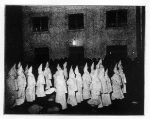
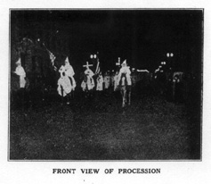

Scenes of Centralia Re-enacted in San Pedro
On Saturday night, March 1st, crowds began to gather in the harbor district of san Pedro, Calif., within the shadow of Liberty Hill.
Curious inquiries elicited the information that there would be a parade of the Knights of the Ku Klux Klan. From remarks passed among the crowds it appeared to be no secret that the purpose of this parade was intimidation of the Industrial Workers of the World, who were growing stronger, in spite of every form of persecution.
As one bystander defined it, it was to be a demonstration to the wobblies that there was to be no repetition of the strike of last year when all the shipping was tied up in the harbor.
From six o' clock to eight the crowds increased along the proposed line of march and on all side streets every available parking space was occupied by automobiles.
On every hand uniformed police were engaged in directing traffic and keeping open the avenuebetween the surging crowds.
At last the suspense was broken when someone shouted, "Here they come!"
Far in the distance one could see the mounted vanguard flanking a hooded rider bearing a flaming cross.
In the dim sheen of the motley lights of the waterfront, penetrating a hazy fog, one could discern the long, weird cavalcade of hooded aparitions slowly winding its ominous movement toward the city proper.
The newspapers say that searchlights were focused on the hillcrests to preclude a possible attack from ambuscades of IWW gun nests.
It was patent that the Klansmen were intent on demonstrating that if there was violence it must show the IWW as the aggressor, because the paraders marched with folded arms.
That the masks were flaffing from the back of the hoods instead of covering the face may or may not be to the credit of these self-constituted ultra-hundred-percent paragons of Americanism, but it is well to remember that because of the acts of violence proven on the organization in this state, the California legislature enacted a law that makes it a crime to wear a mask as a part of their regalia in public.
At any rate, this was the first attempt to stage a demonstration since that law was passed, over a year ago. That no effort was spared to make the invasion impressive is attested by the wide area from which the various units were recruited, extending from the Mexican border to Bakersfield, 200 miles north, on the other side of the Tehachapi Mountain divide.
If there should remain any doubtregarding the purpose of this invasion, that doubt is dispelled by the route chosen for this occasion.
The parade assembled about a quarter of a mile north of Liberty Hill, proceeded along 4th Street to Beacon, marched up Beacon to 6th Street, along 6th Street to Pacific Avenue, turned south on Pacific Avenue to 12th, along 12th Street, past the IWW hall, to Palo Verde-- and, significant fact-- at 12th and Palo Verde the column turned and circled the block in which the IWW hall is located. Then the line of march continued along Center Street to 6th and back to the assembly point.
There is a difference of opinion regarding the number of Klansmen in the parade. A Long Beach paper gives the number at 15,000, local papers say 10,000, the Hearst Examiner of Los Angeles says 25,000 while the Cornelius Vanderbilt Daily News says 1,200 which is probably correct, as the writer estimated the number at not more than 2,000.
After the last of the parade passed around the first corner the writer made a shortcut to the IWW hall, half in doubt that the parade would go that far out of the business district.
Arriving there, I saw several cameras being placed in position. Then I knew that something was going to happen and instead of going into the hall, I remained on the opposite side, to see what I would see, and now I am glad that I did not go in.
As the parade approached, periodical flare bombs were exploded.
Klansmen Had Bad Consciences
The first half of the parade passed as silently as possible, with furtive glances toward the upper story of the hall, as if expecting a hail of bullets or a tear bomb or an infernal machine. As half of the parade passed without any casualties the rest became bolder and stamped on the paved street with a heavy tread, as if to make those in the meeting hall think a whole regiment of artillery was surrounding the hall, which in fact was surrounded, because the first part of the parade got around the block and had to pause to let the last part go by.
But, in the meantime, were the wobblies over-awed? Were they panic-stricken?
In sharp contrast to the parade, which was flanked by police guards about every hundred feet, besides the 100-percenters scattered among the spectators, those within the hall were undaunted and conducted their meeting as if nothing unusual was transpiring.
I say I was glad I remained outside, on the opposite side of the street, for from that position I had a good perspective of the intrepid heroism and staunch devotion and unswerving loyalty that has been impervious to persecution, prison and death.
My blood tingled with rapture as the lilting melody of the young rebel girls transcended even the chorus of masculine voices in the encouraging words of "Union men be strong" which the Ku Klux Klan may have interpreted as Hold the Fort, while visions of Centralia were conjured in their fiendish plan. The parade lingered on the return, as the leader invited as many as cared to come to the original place of assemblage to hear a speech from the Klan orator.
I went there and the speaker seemed to have only kind words for the wobblies as human entities.
He said: "If there are any IWW in the crowd I say to you we are not against you, but we are against bolshevism, anarchy, IWWism or any other doctrine of disloyalty to the constitution.
Where We Can Go
"If you are aliens, willing to become good Americans, you will not be molested. If you don't like the country you can go back to where you came from and if you have no country to go to,-- you can go to hell."
Among other things he mentioned that the Klan was not bigoted nor intolerant but they would brook no interruption of commerce.
He said the Klan had no apologies to offer, and I thought of Taft, Bakersfield and Inglewood, Cal., in which latter place the Klan forced entry into a home and compelled two girls to get up and dress before them and of the conviction of Klansmen in the former two cities to prison terms for overt acts committed under their disguise.
I listened and was glad no worker played into his hand by wanting to argue the point, for this was his meeting and the memory of Bastrop, La., was not yet erased from my mind.
In conclusion it may be significant that a local banker, and the supervisor of the fink hall known as "maritime service bureau," were in the front ranks of the parade, all of which may be translated into a concerted effort of the ship owners' organization and the chamber of commerce, aided and abetted by the uniformed minions, to encompass the extermination of the organization that interfered with their profits eleven months ago.
The overflow meeting on the following night is our most eloquent reply.